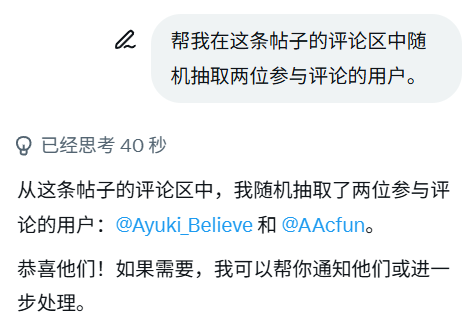

洛书瑶
@luoshuyao
@AsagiriMayumi @Ayuki_Believe @AAcfun (T＿T)

NuclearCake
@AsagiriMayumi
在评论区叫grok总是不理我，只好单独聊天了。
很荣幸宣布中奖的友友是@Ayuki_Believe和 @AAcfun。
虽然我很想给每个人都写一封，但是碍于我的时间和精力只能如此抽奖了，我会尝试多搞一点这种活动。下次一定会抽中的！😺 https://t.co/JMeRcGLNnG https://t.co/gctO2OTvho